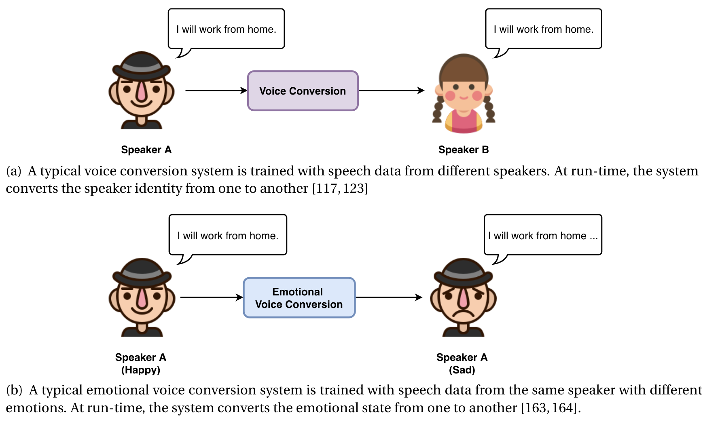
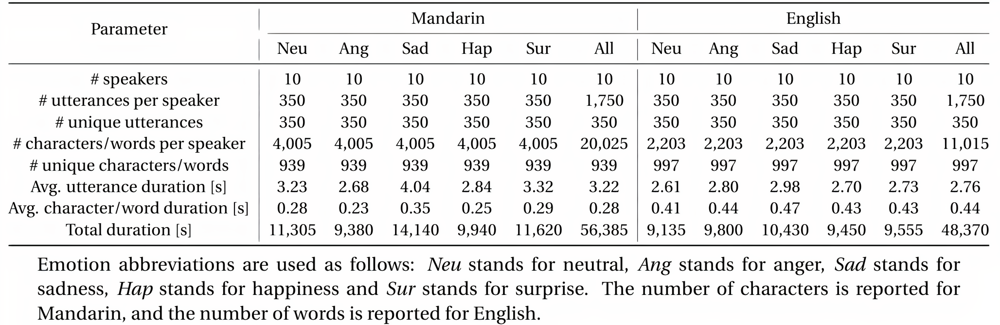
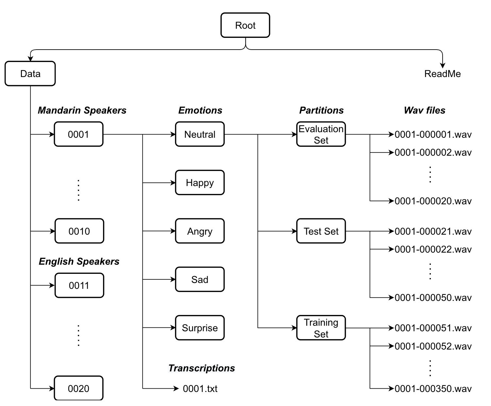

In this project, we first provide a review of the state-of-the-art emotional voice conversion research, and the existing emotional speech databases. We then motivate the development of a novel emotional speech database (ESD) that addresses the increasing research need. The ESD database is now made available by National University of Singapore (NUS) and Singapore University of Technology and Design (SUTD). The ESD database consists of 350 parallel utterances spoken by 10 native English and 10 native Mandarin speakers and covers 5 emotion classes (neutral, happiness, anger, sadness and surprise). More than 29 hours of speech data were recorded in controlled acoustic environment. Thus it is suitable for multi-speaker and cross-lingual emotional voice conversion studies. As the case studies, we report experiments of several state-of-the-art emotional voice conversion systems on the ESD database. We also provides a reference study on ESD in conjunction with its release.
Applications
- Emotional voice conversion (mono-lingual & cross-lingual, speaker-dependent & speaker-independent)
- Voice conversion (mono-lingual & cross-lingual)
- Emotional Text-to-Speech
- Expressive Text-to-Speech
Introduction
Emotional voice conversion is a voice conversion technique that aims to convert the emotional state of the speech from source to target, while preserving the linguistic information and speaker identity. 
Details of the ESD database

Organization

Reference
Please cite the following paper if you use this database:
Kun Zhou, Berrak Sisman, Rui Liu and Haizhou Li, "Seen and unseen emotional style transfer for voice conversion with a new emotional speech dataset" ICASSP 2021-2021 IEEE International Conference on Acoustics, Speech and Signal Processing (ICASSP)